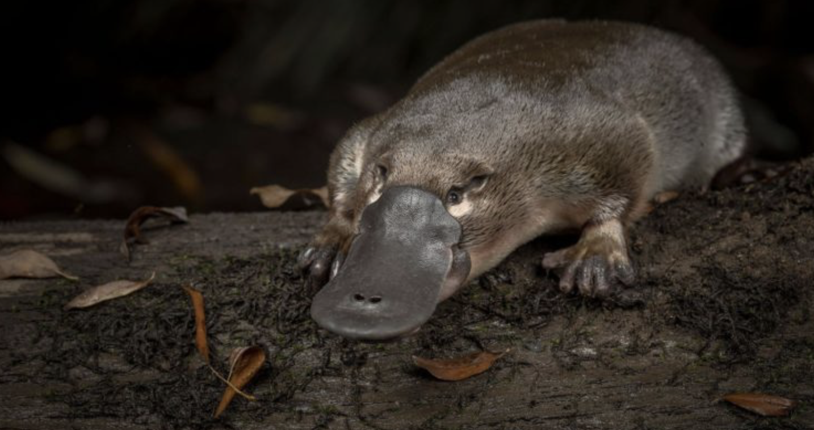

Descripción
El ornitorrinco (Ornithorhynchus anatinus) es un mamífero monotremo semiácuatico originario del este de Australia. Destaca por su pico parecido al de un pato, patas palmeadas y cola ancha; además, es uno de los pocos mamíferos que ponen huevos.
Características Principales
- Hábitat: Ríos, arroyos y lagos de agua dulce en el este de Australia y Tasmania.
- Alimentación: Invertebrados acuáticos como insectos, larvas y crustáceos que busca en el fondo.
- Comportamiento: Gran nadador, se desplaza con las patas delanteras y usa el pico para localizar alimento bajo el agua.
- Reproducción: Mamífero que pone huevos (monotremo).